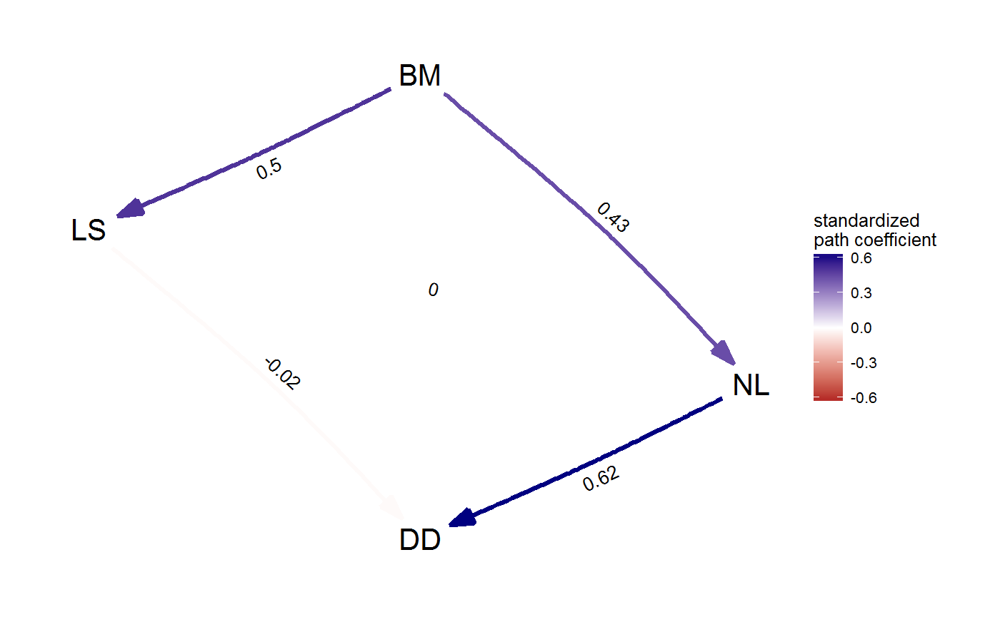
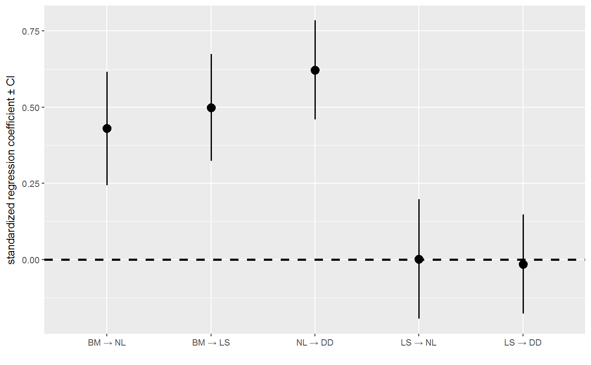
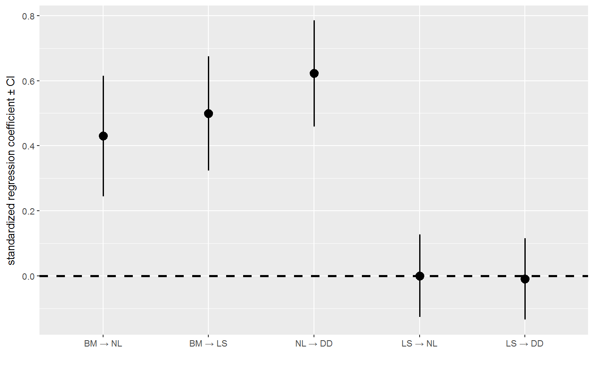

Extract and average the best supported models from a phylogenetic path analysis.
average(phylopath, cut_off = 2, method = "conditional", ...)
| phylopath | An object of class |
|---|---|
| cut_off | The CICc cut-off used to select the best models. Use
|
| method | Either |
| ... | Additional arguments passed to par.avg. For details on the error calculations, see par.avg. |
An object of class fitted_DAG.
candidates <- list(A = DAG(LS ~ BM, NL ~ BM, DD ~ NL + LS), C = DAG(LS ~ BM, NL ~ LS + BM, DD ~ NL)) p <- phylo_path(candidates, rhino, rhino_tree)#> |+++++++++++++ | 25% ~00s |+++++++++++++++++++++++++ | 50% ~00s |++++++++++++++++++++++++++++++++++++++ | 75% ~00s |++++++++++++++++++++++++++++++++++++++++++++++++++| 100% elapsed = 01ssummary(p)#> model k q C p CICc delta_CICc l w #> 1 A 2 8 2.361 0.670 19.943 0.00 1.000 0.581 #> 2 C 2 8 3.011 0.556 20.593 0.65 0.722 0.419# Models A and C have close to equal support, so we may decide to take # their average. avg_model <- average(p) # Print the average model to see coefficients, se and ci: avg_model#> $coef #> BM NL LS DD #> BM 0 0.429814663 0.4988607 0.00000000 #> NL 0 0.000000000 0.0000000 0.62228150 #> LS 0 0.001072211 0.0000000 -0.01537559 #> DD 0 0.000000000 0.0000000 0.00000000 #> attr(,"class") #> [1] "matrix" "DAG" #> #> $se #> BM NL LS DD #> BM 0 0.09479148 0.08954569 0.00000000 #> NL 0 0.00000000 0.00000000 0.08318122 #> LS 0 0.09995746 0.00000000 0.08304297 #> DD 0 0.00000000 0.00000000 0.00000000 #> #> $lower #> BM NL LS DD #> BM 0 0.2440268 0.3233544 0.0000000 #> NL 0 0.0000000 0.0000000 0.4592493 #> LS 0 -0.1948408 0.0000000 -0.1781368 #> DD 0 0.0000000 0.0000000 0.0000000 #> #> $upper #> BM NL LS DD #> BM 0 0.6156025 0.674367 0.0000000 #> NL 0 0.0000000 0.000000 0.7853137 #> LS 0 0.1969852 0.000000 0.1473856 #> DD 0 0.0000000 0.000000 0.0000000 #> #> attr(,"class") #> [1] "fitted_DAG"# Plot to show the weighted graph: plot(avg_model)# Note that coefficents that only occur in one of the models become much # smaller when we use full averaging: coef_plot(avg_model)